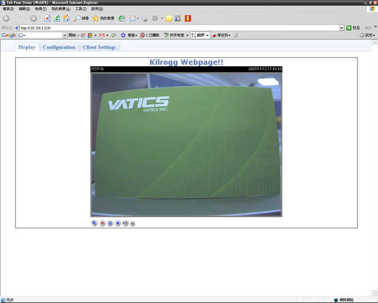
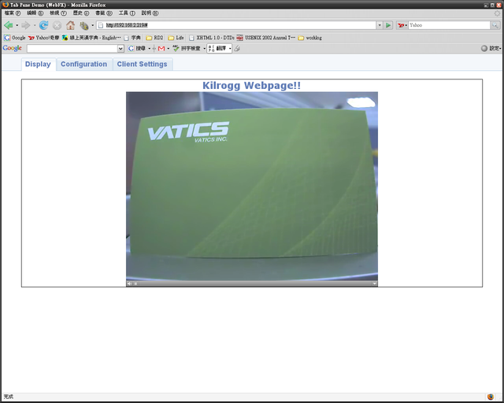

The bottom frame of "Display" page includes
A live video/audio at this page.
When connecting to web page by IE on window PC:
- Show host name.
- A video frame is generated by IE plug-in.
- The connecting stream is configurable in "Client Setting" page.
- Show date and time video frame.
- If connecting stream is MPEG-4, to show connection protocol (TCP/UDP) and media status (A/V) on
video frame.

When connecting to web page other than IE:
- Show host name.
- If connecting stream is MPEG-4, video frame is generated by QuickTime plug-in. (If browser supports)
-
- If connecting stream is MJPEG, live video using server push motion JPEG. (If browser supports)
